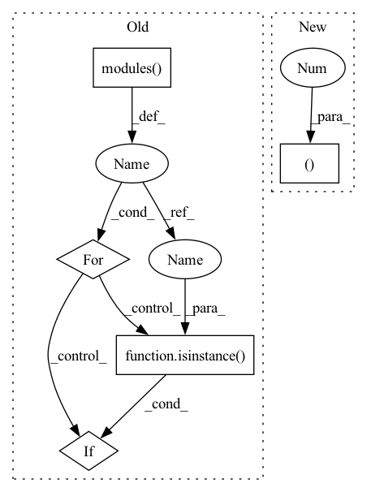

Pattern ID :31088
Before Change
prior_prob = 0.01
bias_value = -math.log((1 - prior_prob) / prior_prob)
for modules in self.conf:
for l in modules.modules():
if isinstance(l , nn.Conv2d) :
torch.nn.init.normal_(l.weight, std=0.01)
torch.nn.init.constant_(l.bias, bias_value)
After Change
elif backbone == "repvgg-A0":
from models.backbone.repvgg_backbone import REPVGGBackbone
self.backbone = REPVGGBackbone(version="A0", pretrained=True)
channels = (192 , 1280 )
self.fea_channel = 256
elif backbone == "repvgg-A2":
from models.backbone.repvgg_backbone import REPVGGBackboneIn pattern: SUPERPATTERN
Frequency: 4
Non-data size: 5
Instances Fragment ID: 91309201
Project Name: zhanghengdev/mutualguide
Commit Name: a1922567db242ed73012d090b249066d1159a902
Time: 2021-06-01
Author: heng.zhang@irisa.fr
File Name: models/detector.py
M Class Name: Detector
N Class Name: Detector
M Method Name: __init__(5)
N Method Name: __init__(5)
M Parent Class: nn.Module
N Parent Class: nn.Module
M File Name: models/detector.py
N File Name: models/detector.py
M Start Line: 33
M End Line: 88
N Start Line: 44
N End Line: 103
Before Change
nn.Linear(1024, 1)
)
for m in self.modules():
if isinstance(m, nn.Conv2d):
nn.init.kaiming_normal_(m.weight, mode="fan_out", nonlinearity="leaky_relu")
if m.bias is not None:
nn.init.constant_(m.bias, 0)
elif isinstance( m, nn.BatchNorm2d) :
nn.init.constant_(m.weight, 1)
nn.init.constant_(m.bias, 0)
elif isinstance(m, nn.Linear):After Change
nn.LeakyReLU(negative_slope=0.2, inplace=True)
)
self.avgpool = nn.AdaptiveAvgPool2d((14, 14 ))
self.fc = nn.Sequential(
nn.Linear(512 * 14 * 14, 1024), Fragment ID: 91309216
Project Name: lornatang/esrgan-pytorch
Commit Name: 91405c6093508419a44d6313646c88ec681a90d2
Time: 2020-10-21
Author: liuchangyu1111@gmail.com
File Name: esrgan_pytorch/model.py
M Class Name: Discriminator
N Class Name: Discriminator
M Method Name: __init__(1)
N Method Name: __init__(1)
M Parent Class: nn.Module
N Parent Class: nn.Module
M File Name: esrgan_pytorch/model.py
N File Name: esrgan_pytorch/model.py
M Start Line: 63
M End Line: 83
N Start Line: 63
N End Line: 69
Before Change
nn.Linear(1024, 1)
)
for m in self.modules():
if isinstance(m, nn.Conv2d):
nn.init.kaiming_normal_(m.weight, mode="fan_out", nonlinearity="leaky_relu")
m.weight.data *= 0.1
if m.bias is not None:
nn.init.constant_(m.bias, 0)
elif isinstance(m, nn.Linear):
nn.init.kaiming_normal_(m.weight)
m.weight.data *= 0.1
nn.init.constant_(m.bias, 0)
elif isinstance( m, nn.BatchNorm2d) :
nn.init.constant_(m.weight, 1)
nn.init.constant_(m.bias, 0)
After Change
nn.LeakyReLU(negative_slope=0.2, inplace=True)
)
self.avgpool = nn.AdaptiveAvgPool2d((14, 14 ))
self.fc = nn.Sequential(
nn.Linear(512 * 14 * 14, 1024), Fragment ID: 91309205
Project Name: lornatang/srgan-pytorch
Commit Name: 5cf838428d2fd83fd2fc39b794fdd8fb82ea91ed
Time: 2020-10-21
Author: liuchangyu1111@gmail.com
File Name: srgan_pytorch/model.py
M Class Name: Discriminator
N Class Name: Discriminator
M Method Name: __init__(1)
N Method Name: __init__(1)
M Parent Class: nn.Module
N Parent Class: nn.Module
M File Name: srgan_pytorch/model.py
N File Name: srgan_pytorch/model.py
M Start Line: 63
M End Line: 85
N Start Line: 63
N End Line: 69
Before Change
prior_prob = 0.01
bias_value = -math.log((1 - prior_prob) / prior_prob)
for modules in self.conf:
for l in modules.modules():
if isinstance( l, nn.Conv2d) :
torch.nn.init.normal_(l.weight, std=0.01)
torch.nn.init.constant_(l.bias, bias_value)
After Change
elif backbone == "repvgg-A0":
from models.backbone.repvgg_backbone import REPVGGBackbone
self.backbone = REPVGGBackbone(version="A0", pretrained=True)
channels = (192 , 1280 )
self.fea_channel = 256
elif backbone == "repvgg-A2":
from models.backbone.repvgg_backbone import REPVGGBackbone Fragment ID: 91309183
Project Name: zhangheng19931123/mutualguide
Commit Name: a1922567db242ed73012d090b249066d1159a902
Time: 2021-06-01
Author: heng.zhang@irisa.fr
File Name: models/detector.py
M Class Name: Detector
N Class Name: Detector
M Method Name: __init__(5)
N Method Name: __init__(5)
M Parent Class: nn.Module
N Parent Class: nn.Module
M File Name: models/detector.py
N File Name: models/detector.py
M Start Line: 33
M End Line: 88
N Start Line: 44
N End Line: 103